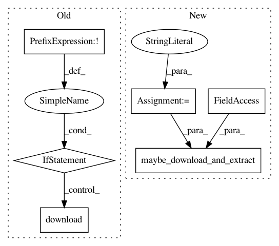

bd97dee4fc635d8aa8707c4fbac39e569e9f148d,tensorlayer/files.py,,load_cifar10_dataset,#,113
Before Change
tar.close()
print("Extracted to %s" % names[0])
if not os.path.exists("cifar-10-batches-py"):
download(filename)
un_tar(filename)
def unpickle(file):
fp = open(file, "rb")
if sys.version_info.major == 2:
data = pickle.load(fp)
After Change
return data
filename = "cifar-10-python.tar.gz"
url = "https://www.cs.toronto.edu/~kriz/"
//Download and uncompress file
maybe_download_and_extract(filename, path, url, extract=True)
//Unpickle file and fill in data
X_train = None
y_train = []
In pattern: SUPERPATTERN
Frequency: 3
Non-data size: 6
Instances
Project Name: zsdonghao/text-to-image
Commit Name: bd97dee4fc635d8aa8707c4fbac39e569e9f148d
Time: 2017-01-18
Author: i.mochaz@gmail.com
File Name: tensorlayer/files.py
Class Name:
Method Name: load_cifar10_dataset
Project Name: zsdonghao/text-to-image
Commit Name: bd97dee4fc635d8aa8707c4fbac39e569e9f148d
Time: 2017-01-18
Author: i.mochaz@gmail.com
File Name: tensorlayer/files.py
Class Name:
Method Name: load_nietzsche_dataset
Project Name: zsdonghao/text-to-image
Commit Name: bd97dee4fc635d8aa8707c4fbac39e569e9f148d
Time: 2017-01-18
Author: i.mochaz@gmail.com
File Name: tensorlayer/files.py
Class Name:
Method Name: load_ptb_dataset